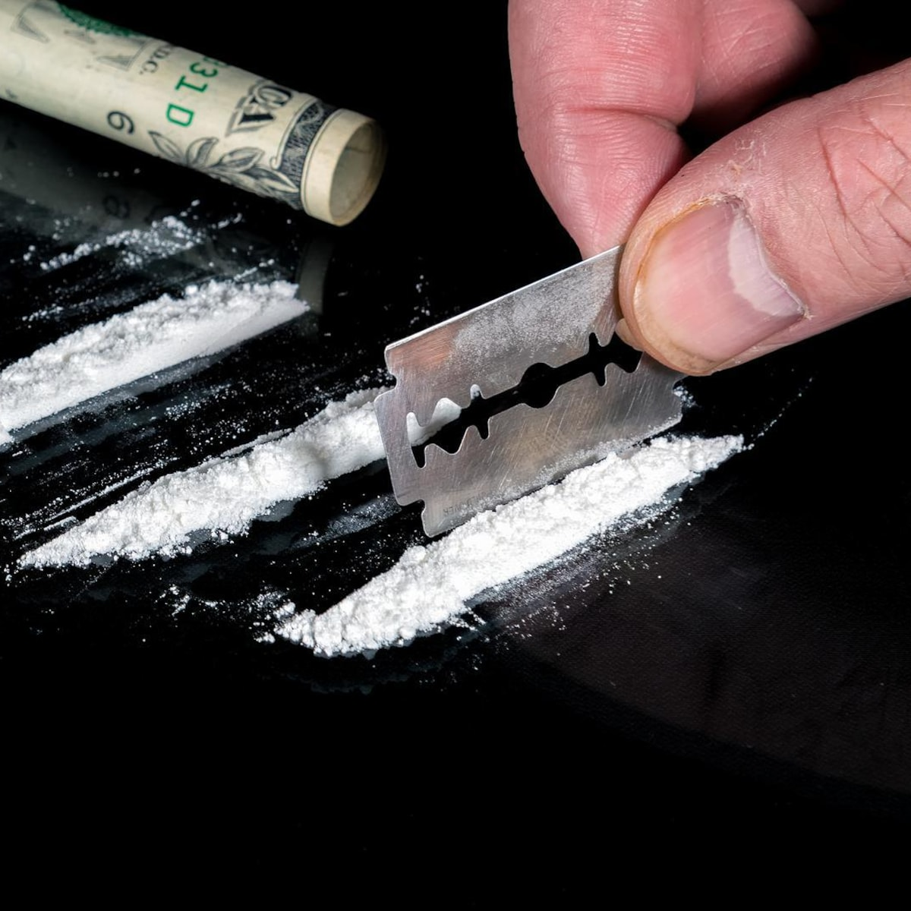
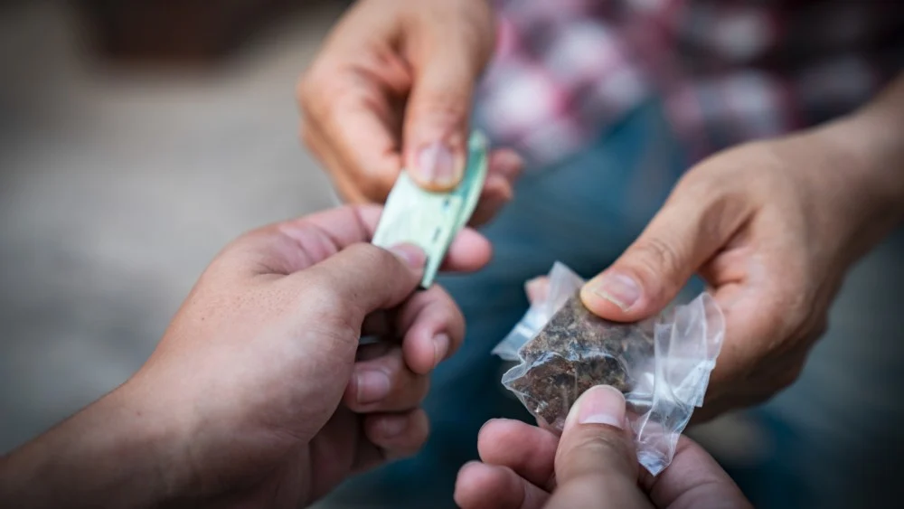
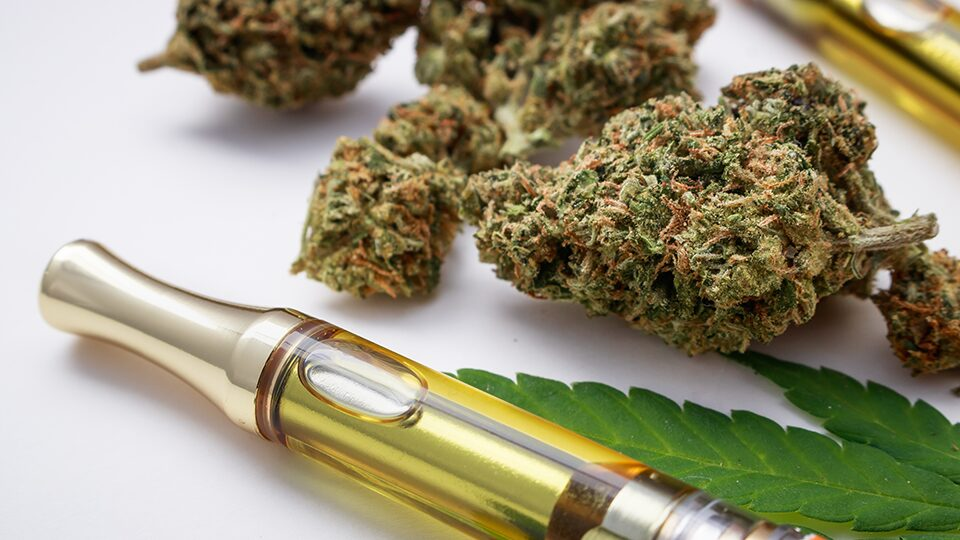
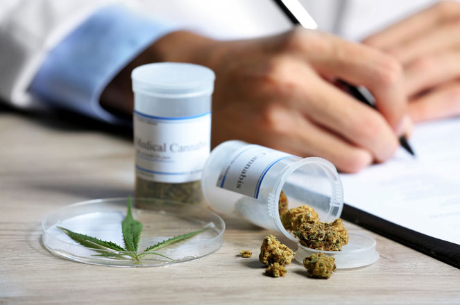
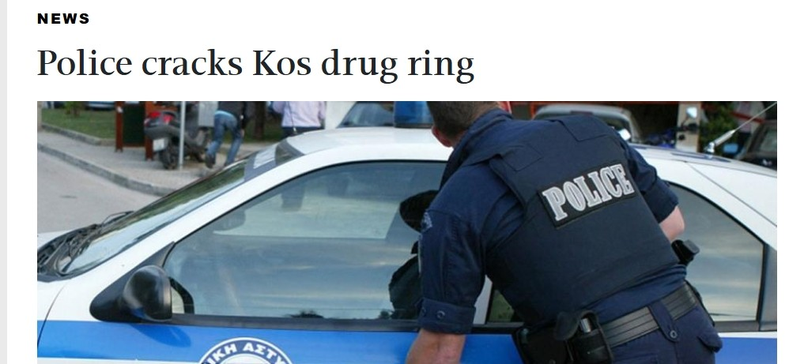

Drugs op Kos
Kos is een prachtig eiland, maar toeristen moeten goed weten: cannabis, wiet, hasj, cocaïne, MDMA, heroïne en andere psychoactieve stoffen zijn illegaal. Buitenlanders worden precies hetzelfde behandeld als Grieken.
Wat je moet weten over de wet en handhaving.

Kos is een prachtig eiland, maar toeristen moeten goed weten: cannabis, wiet, hasj, cocaïne, MDMA, heroïne en andere psychoactieve stoffen zijn illegaal. Buitenlanders worden precies hetzelfde behandeld als Grieken.
Bij bezit van een kleine hoeveelheid voor eigen gebruik (Law 4139/2013):
Zelfs kleine hoeveelheden kunnen leiden tot arrestatie en een juridische procedure.

Bij handel, verkoop, teelt, import of export gelden veel zwaardere straffen:
Verkoop of verspreiding in de buurt van scholen of plekken met jongeren maakt de straf zwaarder.

Op Kos bestaan winkels die “wiet” of joints verkopen. Dit zijn meestal CBD-producten met minder dan 0,2% THC – legaal in Griekenland en zonder psychoactief effect (geen high).
Alles boven die limiet blijft verboden. Recreatieve cannabis of THC-producten zijn niet legaal verkrijgbaar.

Medische cannabis is legaal, maar strikt gereguleerd. Alleen met een Grieks recept van een erkende arts. Buitenlandse recepten worden meestal niet erkend. Zonder geldig Grieks recept is gebruik illegaal.

De autoriteiten handhaven strikt, vooral in toeristische gebieden, op stranden, in bars/clubs en bij grens- en douanecontroles. Drugs meenemen naar Kos – ook kleine hoeveelheden – is altijd illegaal en kan direct tot arrestatie leiden.
What you need to know about the law and enforcement.
Kos is a beautiful island, but tourists should know: cannabis, weed, hash, cocaine, MDMA, heroin and other psychoactive substances are illegal. Foreigners are treated exactly the same as Greeks.
For possession of a small amount for personal use (Law 4139/2013):
Even small amounts can lead to arrest and legal proceedings.
For trafficking, sale, cultivation, import or export, much heavier penalties apply:
Sale or distribution near schools or places with young people makes the penalty heavier.
On Kos there are shops that sell “weed” or joints. These are usually CBD products with less than 0.2% THC – legal in Greece and without psychoactive effect (no high).
Anything above that limit remains forbidden. Recreational cannabis or THC products are not legally available.
Medical cannabis is legal but strictly regulated. Only with a Greek prescription from a recognised doctor. Foreign prescriptions are usually not recognised. Without a valid Greek prescription, use is illegal.
Authorities enforce strictly, especially in tourist areas, on beaches, in bars/clubs and at border and customs controls. Bringing drugs to Kos – even small amounts – is always illegal and can lead to immediate arrest.
Was du über Gesetz und Kontrolle wissen solltest.
Cannabis, Haschisch, Kokain, MDMA, Heroin und andere psychoaktive Stoffe sind illegal. Ausländer werden genauso behandelt wie Griechen.
Bei Besitz einer kleinen Menge zum Eigengebrauch (Gesetz 4139/2013):
Läden mit „Weed“ verkaufen meist CBD mit unter 0,2 % THC – legal und ohne Rausch. Alles darüber bleibt verboten.
Nur mit griechischem Rezept eines anerkannten Arztes. Ausländische Rezepte werden meist nicht anerkannt.
Besonders in Touristengebieten, an Stränden, in Bars und bei Zollkontrollen. Auch kleine Mengen können zur Festnahme führen.
Cosa sapere su legge e controlli.
Cannabis, hashish, cocaina, MDMA, eroina e altre sostanze psicoattive sono illegali. Gli stranieri sono trattati come i greci.
Di solito CBD con meno dello 0,2% di THC – legali e senza effetto psicoattivo. Oltre quel limite resta vietato.
Solo con ricetta greca di un medico riconosciuto. Le ricette estere di solito non sono riconosciute.
Soprattutto in zone turistiche, spiagge, bar e ai controlli doganali. Anche piccole quantità possono portare all’arresto.
Yasa ve uygulama hakkında bilmeniz gerekenler.
Kannabis, esrar, kokain, MDMA, eroin ve diğer psikotrop maddeler yasaktır. Yabancılar Yunanlılarla aynı muameleyi görür.
Genelde %0,2’den az THC’li CBD – yasal ve keyif vermez. Üzeri yasaktır.
Yalnızca Yunan reçetesi ile. Yabancı reçeteler genelde kabul edilmez.
Turistik bölgelerde, plajlarda, barlarda ve gümrükte. Küçük miktarlar bile tutuklamaya yol açabilir.
Lo que debes saber sobre la ley y el control.
Cannabis, hachís, cocaína, MDMA, heroína y otras sustancias psicoactivas son ilegales. Los extranjeros reciben el mismo trato que los griegos.
Suelen ser CBD con menos del 0,2% de THC – legales y sin efecto psicoactivo. Por encima de ese límite sigue prohibido.
Solo con receta griega de un médico reconocido. Las recetas extranjeras suelen no reconocerse.
Sobre todo en zonas turísticas, playas, bares y en aduanas. Incluso pequeñas cantidades pueden llevar a la detención.